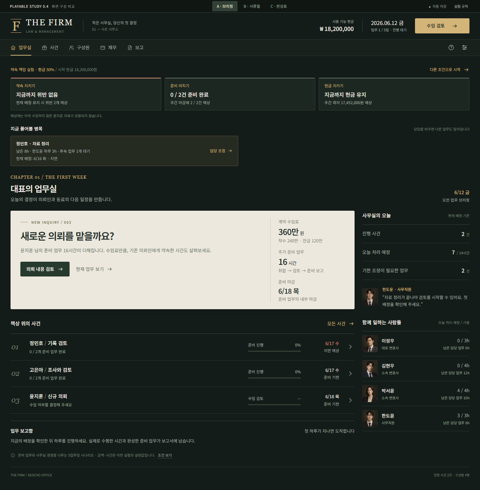
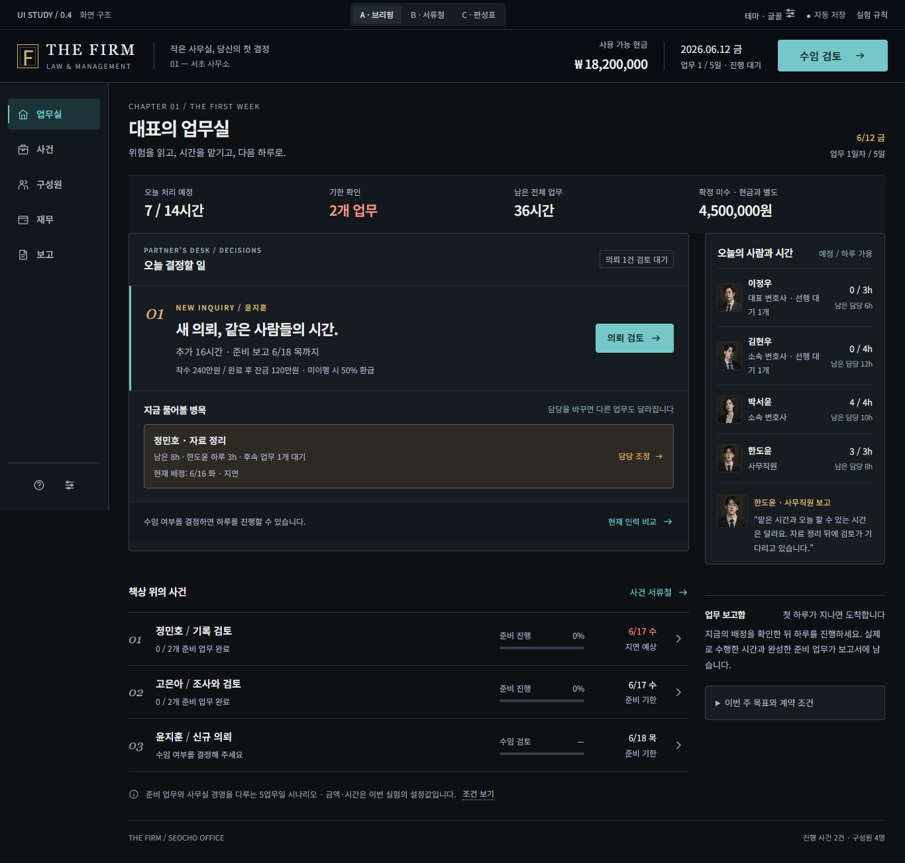
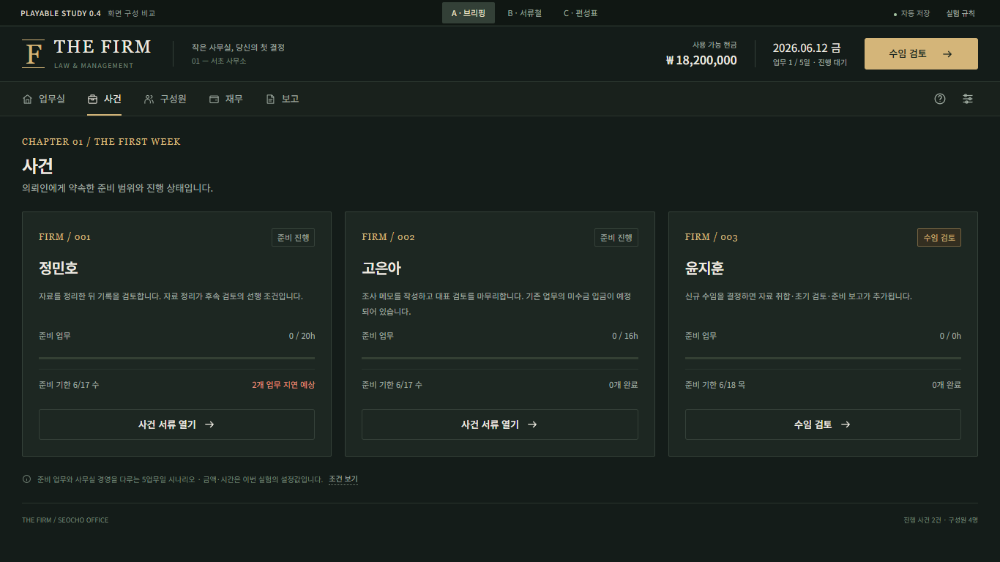
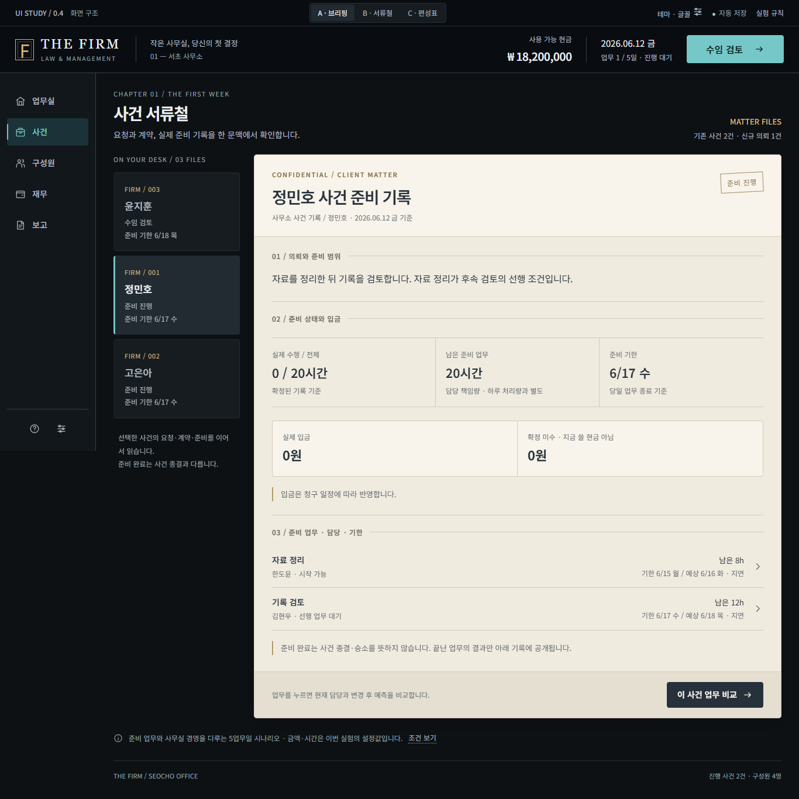
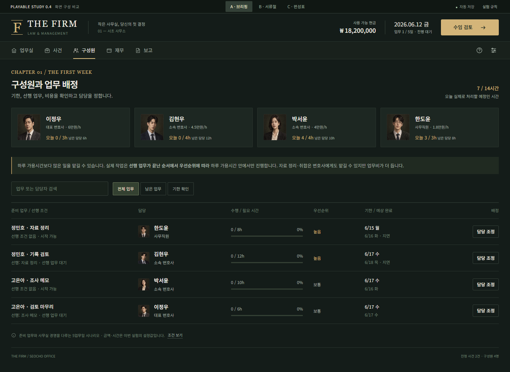
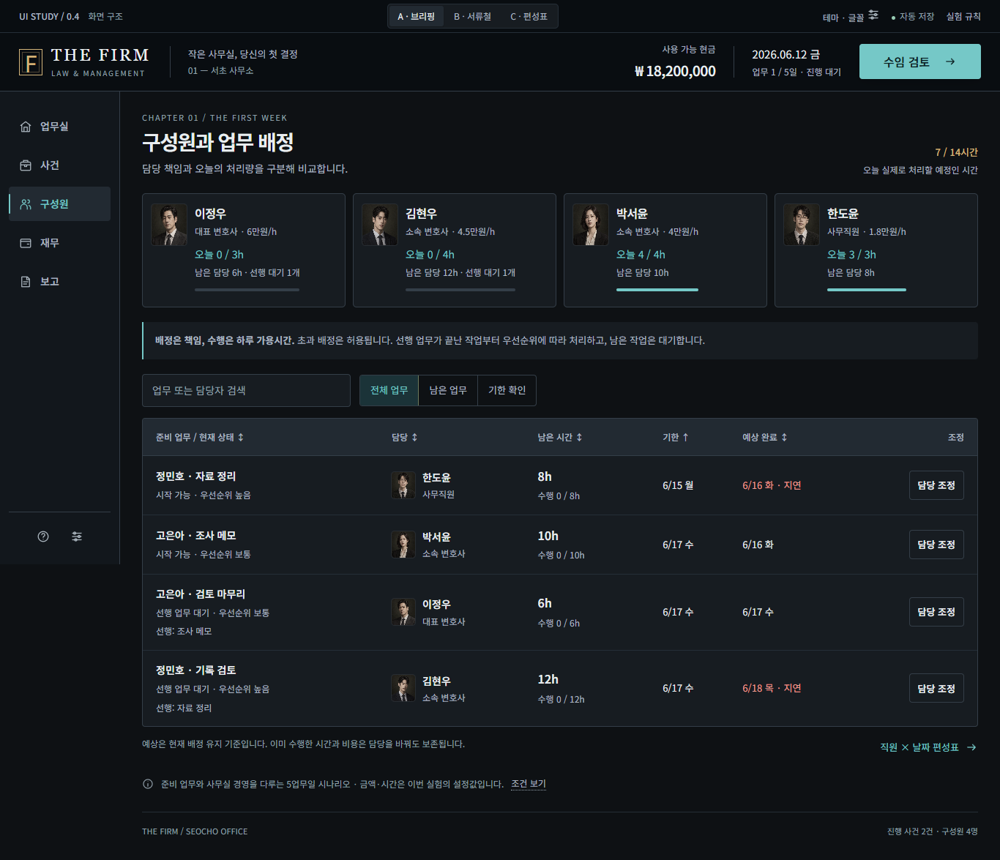
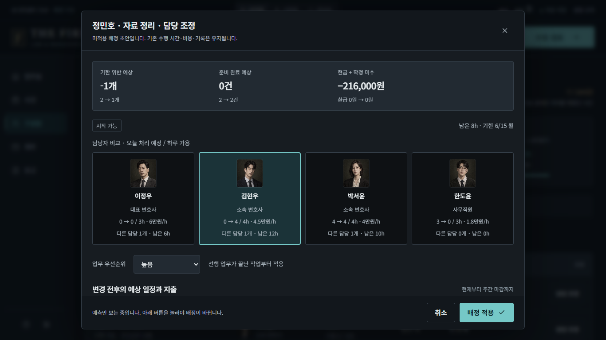
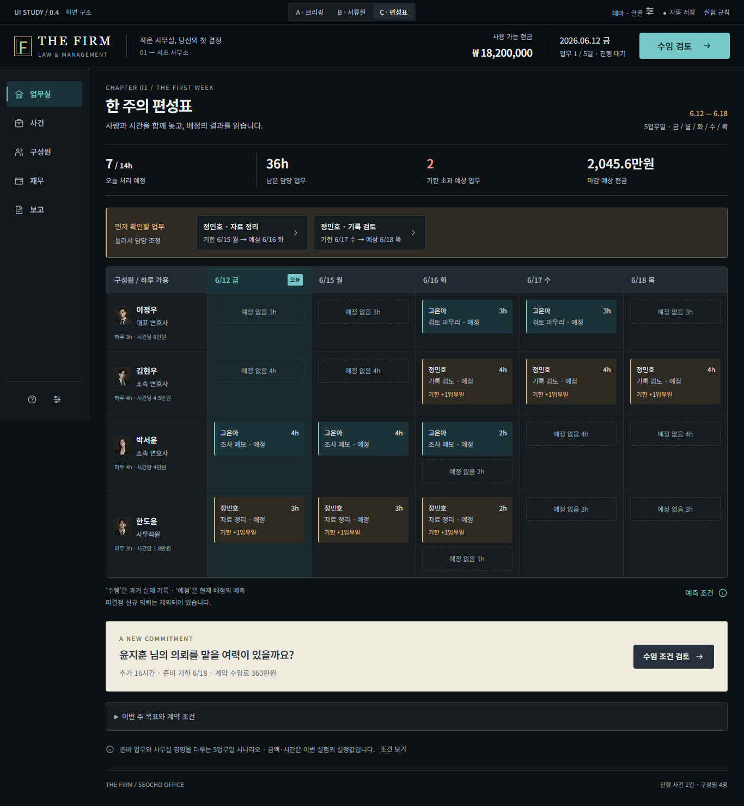
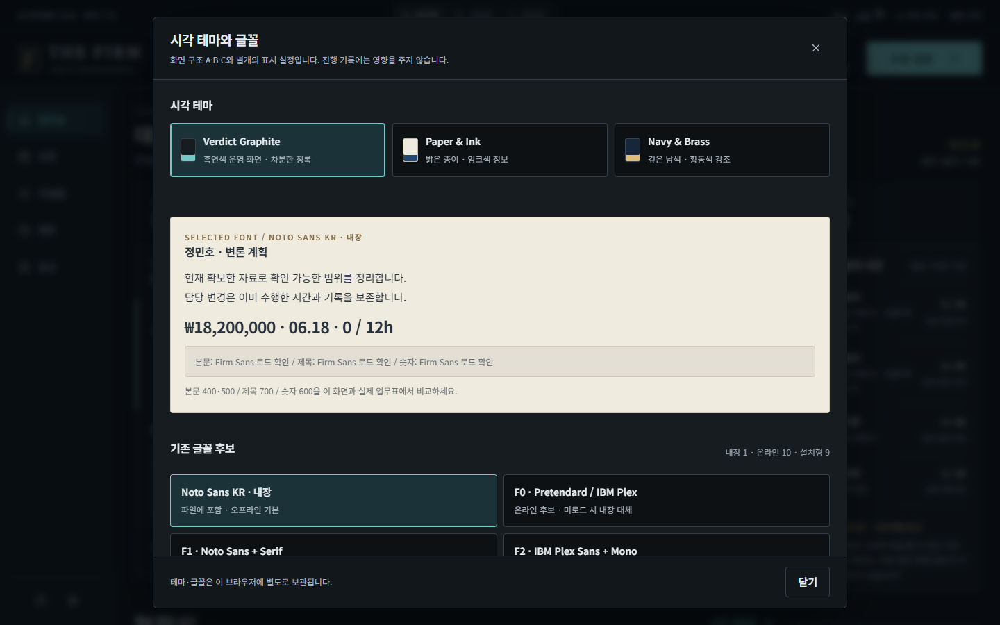

THE FIRM / UI REVIEW · 2026.10.27
위험을 찾고, 사람을 비교하고, 하루를 진행하기
같은 초기 상태를 사용한 실제 브라우저 화면입니다. 경영 엔진·경제 수치·저장 스키마는 유지했습니다. 디자인의 효용과 재미는 사람의 플레이로 추가 확인해야 합니다.
01 · 대표 업무실
상태 카드와 큰 수임 배너의 반복을 줄이고, 당장 판단할 위험과 의뢰를 먼저 읽도록 바꿨습니다. 현금·확정 미수·오늘의 시간은 별도 행으로 구분합니다.
이전 v0.4
UI 개선판
02 · 사건과 서류
사건 목록을 유지하면서 의뢰인 요청, 계약, 준비 업무와 돈의 흐름을 읽습니다. 준비 완료는 사건 종결과 별개의 상태입니다.
이전 v0.4
UI 개선판
03 · 구성원과 업무 배정
담당 책임, 오늘 수행 예정 시간, 남은 전체 업무를 구분하고 업무·담당·남은 시간·기한·예상 완료·조정을 같은 표에서 비교합니다.
이전 v0.4
UI 개선판
인계 전후 비교
변경 전후의 예상 완료와 비용을 비교합니다. 취소와 미적용 초안은 게임 상태를 변경하지 않습니다.

직원 × 날짜 편성

390px 화면과 적용 버튼
테마와 글꼴
화면 구조 A/B/C와 별도로 세 시각 테마·원래 글꼴 후보를 비교합니다. 글꼴은 본문·제목·숫자의 실제 로드 여부를 표시하며 온라인 후보는 명시적 요청이 있어야 내려받습니다.

실행본 열기 →